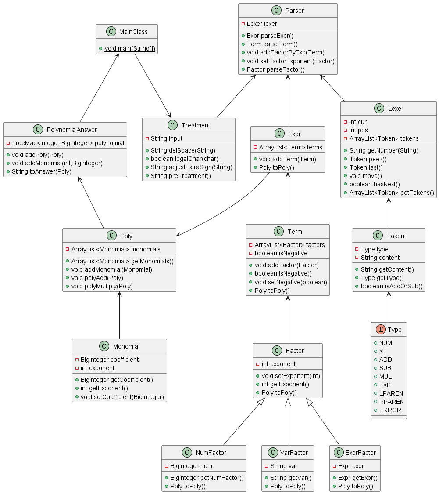
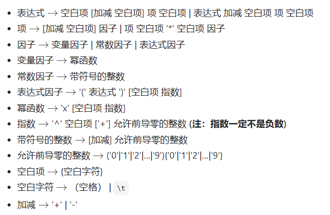

BUAA_OO_Unit1
BUAA_OO_Unit1总结
一、第一次作业hw1
前言
耗时数天完成了代码书写及代码调试，感悟良多，归功于Training中的内容，我在本次作业中也选择了对应的递归下降的思路构造语法树，同时在根据语法树利用逆向思路将解析完的表达式转化为多项式形式，最后多项式存入TreeMap中按要求降序输出结果
1.代码UML框架

2.代码架构分析
2.1 预处理

根据表达式的形式化表达我们可以得到以下结论：
- 表达式中最多三个连续的
+或者- - 常数因子可以有前导0
- 指数符号后只可能是
token.ADD或者token.NUM - 表达式中可能存在大量
space和\t - 表达式或
(后可能存在符号
于是为了简化后续操作我选择进行的以下操作
- 若读到
+且前面存在其他符号或位于开头则去掉加号 - 若读到
-且前面存在(或者位于开头则在前面加上0，若减号连续则将其换为一个+ - 去掉所有空格
2.2 词法分析与解析部分
2.2.1 Lexer部分
- 在读取到
token.NUM时去除前缀0（但是谨记保证数不会被全部去掉） - 在读取到未知符号时我们选择抛出异常（强烈建议此方法，后续可以快速定位bug）
1 | |
2.2.2 Parse
该部分是代码词法解析的核心部分
我完成了
parseExpr()、parseTerm()、parseFactor()的书写并采用递归下降的方法调用由于预处理我们可以只对Term加上正负属性并且在这里完成项的正负号的确定
在解析项时去掉指数符号，将其全部转化为因子形式
1
2
3
4
5
6
7
8Factor factor = parseFactor();
if (factor.getExponent() == 0) {
term.addFactor(new NumFactor(BigInteger.ONE));
return;
}
for (int i = 0; i < factor.getExponent(); i++) {
term.addFactor(factor);
}
同上在解析未知符号是我们选择抛出异常便于debug
1
throw new RuntimeException("Invalid token");
2.3 根据解析结果转化为多项式
该部分核心思路还是递归思路
Expr -> Term -> Factor
然后多项式中存入TreeMap<Integer,BigInteger> polynomial
最后，我们要得到形如：$Expr = \sum\limits_ { i = 0 } a_i * x ^ { b_i }$
好处：保证有序性和便于得到$a_i$和$b_i$，在此基础上得到一个字符串即可
3.测试思路
3.1.自动化测试
3.11 数据生成
思路还是和解答程序程序相似,按照generate_factor —> generate_term —> generate_expr —>generate_testcase
1 | |
最后随机在生成式之间添加空格
3.12 测试比对
依赖于sympy自带的化简功能实现
1 | |
二、第二次作业hw2
前言
- 关于使用替换进行函数展开，要注意不要引入新的形参。例如f(y, x)=y+x，展开f(x, x^2)时，若不加任何修改直接用x替换形参y，f就会变为x+x， 再直接用x^2替换所有形参x，就会变为x^2+x^2的错误结果。因此，可以先将所有形参变为其他形式， 如f(v,u) = v+u，再替换形参v和u就不会发生上述错误。表达式解析
- 深拷贝与浅拷贝学习
BUAA_OO_Unit1
https://fantasylee21.github.io/2024/03/01/BUAA-OO-Unit1/